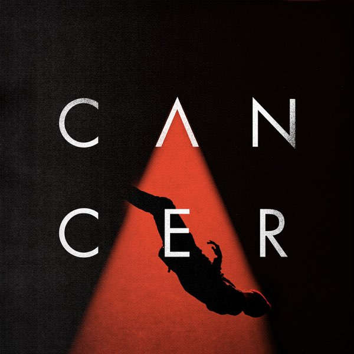
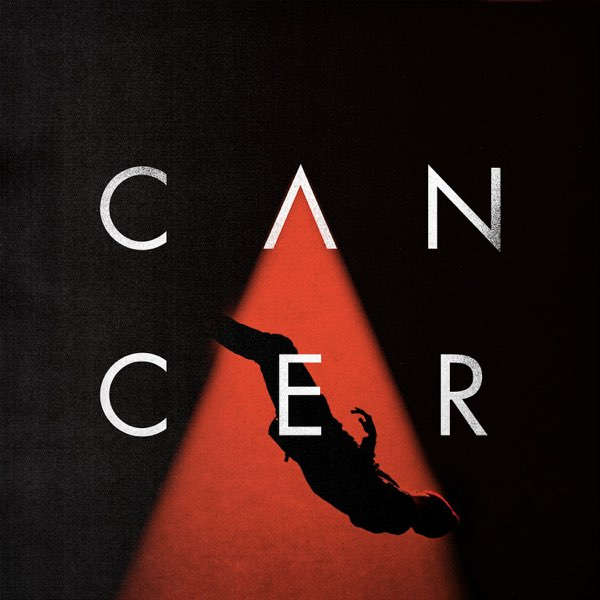
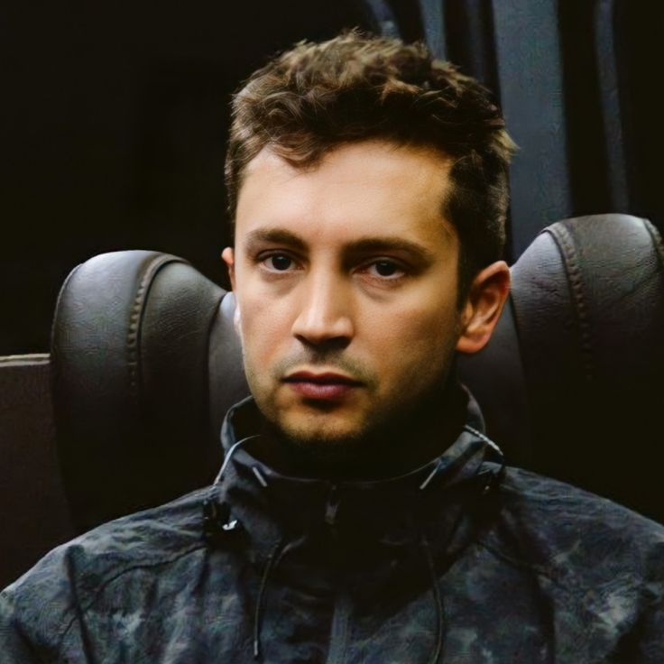

Conoce la historia de la banda y sus integrantes.
¿Que es Twenty One Pilots?
Twenty One Pilots (estilizado también como twenty øne piløts o Twenty Øne Piløts) es un dúo musical estadounidense originario de Columbus, Ohio. Esta banda se formó en el año 2009 por el vocalista Tyler Joseph junto con Nick Thomas y Chris Salih, quienes en 2011 la abandonaron por falta de tiempo, Nick porque querian enfocarse en sus estudios y Chris por su trabajo. Desde su partida, la formación ha consistido en el cantante Tyler Joseph y el baterista Josh Dun. El grupo es principalmente conocido por los sencillos "Stressed Out", "Ride" y "Heathens".
El estilo musical de la banda ha sido descrito como hip hop alternativo, electropop, indie pop, pop rock, rap, reggae y trip hop. También han sido ocasionalmente clasificados como "indie rock", electrónica, pop-rap, hip hop, y indietronica. Es difícil categorizar a Twenty One Pilots usando solamente un género, ya que encajan dentro de varios. Se ha atribuido esto parcialmente al hecho de que, tanto Tyler como Josh, son músicos autodidactas, lo que implica que mientras producen su trabajo rompen muchas convenciones musicales de las que no son conscientes, sus canciones son escritas por Tyler, quién incorpora tanto rap como canto en sus letras. Tyler ha dicho que nunca pretendía ser rapero, pero que al intentar encajar poesía, sobre todo cuando es demasiado larga, necesita empezar a rapear para hacer encajar las letras.
El propósito de Twenty One Pilots para hacer música es "hacer que la gente piense" y alentarlos a encontrar alegría en lo que creen en la vida. Twenty One Pilots deriva su nombre y filosofía de la banda en un origen literario. Esto se remonta a los días de la universidad, según Tyler, cuando estudiaba teatro en la Universidad Estatal de Ohio. Obtuvo el nombre y el significado de la banda al leer la obra de 1947 All My Sons del dramaturgo estadounidense Arthur Miller.
En la historia, el protagonista principal es un contratista de guerra llamado Joe Keller que fabrica piezas para aviones de guerra. Al descubrir que algunos son defectuosos y fallarían, debe decidir si los usa o no. Se ve obligado a tomar la decisión de gastar su dinero para reparar las partes defectuosas o usarlas así dañadas. Aunque quiere hacer lo correcto, Keller teme perder dinero y necesita mantener a su familia, por lo que decide enviar las partes defectuosas de todos modos a Europa durante Segunda Guerra Mundial. Como consecuencia de su decisión, veintiún pilotos mueren y al final, Keller se suicida.
Tyler ha explicado los temas de dilema moral de la historia, entre elegir la decisión fácil y la correcta resonó con él e inspiró el nombre y la formación de la banda. Le demostró que cada decisión que tome tendrá excelentes resultados o consecuencias nefastas. Tyler dice a esto: "Nos enfrentamos constantemente con decisiones. Muchas veces, las correctas toman más trabajo, lleva más tiempo ver el beneficio, son la ruta larga. Sabemos que para llegar a donde queremos estar y hacer lo que queremos hacer, a veces tenemos que hacer lo que no tenemos ganas de hacer. Se necesita mucho trabajo, y el nombre de la banda es un recordatorio constante de eso".
Con respecto a su logotipo, significa Twenty One Pilots. Y va acompañado con el concepto de que siempre estamos luchando por un proposito, además de descubrir cual es nuestro proposito, cual es el punto, y con el logotipo, lo que realmente significa es un estímulo, Tyler declaró en una entrevista que: “El significado del propósito para mí es crear algo, si es escribiendo letras, pintando una imagen, expresándose a través del arte, ya sea fotografía, música o teatro. No tiene que ser artístico, pero si creas algo y solo tú sabes su significado, ese es el comienzo del propósito para ti.
Como comenzó Twenty One Pilots.
2001 - 2010
Tyler Joseph conoció a su futuro compañero de banda Nick Thomas a una edad temprana mientras jugaba baloncesto juvenil en Columbus, Ohio. Thomas luego fue transferido la escuela secundaria de Tyler, y los dos seguirían siendo amigos durante la escuela secundaria.
Tyler comenzó a tocar música después de encontrar un teclado viejo en su armario, un regalo de Navidad de su madre, y comenzó a imitar melodías de radio. En 2007, Tyler grabó un álbum en solitario No Phun Intended, en el sótano de sus padres. Thomas contribuyó con la guitarra a varias canciones del álbum, y colaboró en la canción "Trees", que más tarde se convertiría en una canción distintiva de Twenty One Pilots.

Mientras asistía a la Universidad Estatal de Ohio, Tyler conoció en Texas a su futuro compañero de banda Chris Salih en una fiesta. Al ver el talento y la energía creativa de Tyler, Salih le consultó sobre comenzar una banda. Tyler acordó tocar música juntos y comenzó a compartir sus ideas para nueva música. Justo antes de su primera actuación, Tyler invitó a Thomas a unirse a la banda aún sin nombre como bajista. En 2009, el grupo se mudó a una casa propia, donde su primer álbum fue conceptualizado y grabado en el sótano.
Ahora con el nombre de Twenty One Pilots, El grupo lanzó su álbum debut homónimo, Twenty One Pilots, el 29 de diciembre de 2009, y comenzó a recorrer Ohio. Su comercialización inicial fue de base la madre de Tyler, quien se pararía afuera de Universidad Estatal de Ohio regalando entradas para sus espectáculos. Durante este tiempo, la banda participó en los concursos "Battle of the Band" en The Alrosa Villa y The Basement, importantes locales de música de Columbus.
En 2010, la banda publicó dos pistas en su cuenta SoundCloud, una versión de "Jar of Hearts" de Christina Perri y una interpretación remezclada de "Con te partirò (Time to Say Goodbye)" por Andrea Bocelli y Sarah Brightman. La última canción se convertiría en la primera canción que el baterista local Josh Dun escuchó del grupo.
2011 - 2012
Salih se fue el 8 de mayo de 2011 para enfocarse en el trabajo, y Thomas se fue el próximo mes el 3 de junio de 2011 para enfocarse en la educación, Antes de partir del proyecto, Salih invitó a un compañero de trabajo y amigo del grupo, Josh Dun (exbaterista de gira de House of Heroes), para tomar su lugar en la banda. Impresionado por el potencial de la banda y la visión creativa de Tyler, Josh abandonó los planes de tocar la batería en Nashville y se unió al proyecto solo unas semanas antes de que Thomas dejara el grupo.
Tanto Salih como Thomas permanecieron involucrados con la producción de la banda durante algún tiempo después de su partida. Thomas asistió brevemente a la escuela en Carolina del Norte, pero se mudó a la casa de Tyler y Josh en Columbus un año después y comenzó a administrar sus mercancías.
Con una nueva alineación compuesta solo por Tyler y Josh, Twenty One Pilots lanzó por su cuenta su segundo álbum, "Regional at Best", el 8 de julio de 2011. El álbum fue acompañado por un programa de lanzamiento de CD gratuito con el argumento de New Albany High School. Mientras Salih y Thomas estuvieron involucrados en la conceptualización del álbum, ni ellos ni Josh afirman haber tenido mucha participación en su producción, que fue manejada casi exclusivamente por Tyler.

En noviembre de 2011, después de meses de cultivar una base de admiradores en el área de Columbus a través de la interacción de las redes sociales y las giras constantes, la banda tocó en un concierto con entradas agotadas en Columbus Newport Music Hall. Este logro notable para un grupo local sin firmar llamó la atención de varios sellos discográficos interesados en ver si el atractivo de la banda podría extenderse fuera de Ohio.
2012 - 2014
En abril de 2012, en un concierto agotado en el Lifestyle Communities Pavilion, se anunciaron bajo el sello de Atlantic Records, subsidiaria de Fueled by Ramen. El 17 de julio de 2012, lanzaron su álbum debut con Fueled by Ramen en forma de EP con tres canciones, titulado "Three Songs".
Vessel fue lanzado el 8 de enero de 2013 y obtuvo el puesto 58 en el Billboard 200. Los vídeos musicales de "Guns for Hands" y "Car Radio", fueron lanzados el 7 de enero y el 9 de abril respectivamente. El grupo tuvo su primer éxito en las radios estadounidenses con "Holding on to You", que alcanzó el puesto 11 en la tabla Billboard Alternative Songs.

2015 - 2017
El 17 de mayo de 2015, Twenty One Pilots lanzó su segundo álbum de estudio, Blurryface, 2 días antes de la fecha oficial de lanzamiento, el 19 de mayo.
En febrero de 2016, la canción Stressed Out alcanzó el puesto No. 2 en el Billboard Top-Five Single. En marzo del mismo año, el álbum ya había vendido 792 000 copias sólo en Estados Unidos. Blurryface alcanzó también el puesto No. 1 en el Top Billboard 200. (Es que Stressed Out es una pasada).

El 17 de junio de 2016 lanzaron, a través de iTunes, un nuevo sencillo llamado "Heathens", que fue hecho para la banda sonora de la película Suicide Squad. El sencillo es la tercera canción de la banda sonora. En septiembre de 2016, se publicó una versión de “Cancer”. Siendo este cover una canción de la banda My Chemical Romance del año 2006.
 

El 12 de febrero del 2017, el dúo ganaría su primer Grammy en la categoría Mejor Dúo/Grupo Alternativo con su sencillo Stressed Out. A mitades de este mismo año, la banda en su cuenta oficial de Twitter anunciaría con unas cuantas misteriosas fotos su descanso, el cual sería denominado por los fanáticos como "Hiatus".
2018 - 2019
En julio de 2018, Twenty One Pilots rompió su silencio de más de un año, primero enviando un críptico correo electrónico a los fanáticos y luego publicando un vídeo en todas las plataformas de redes sociales, además de haber actualizado su logotipo y marca. El 11 de julio de 2018, la banda lanzaría dos nuevos sencillos, “Jumpsuit” y”Nico and the Niners”, entrando ambas canciones en los primeros puestos del Billboard Top Rock Songs Chart. En las siguientes semanas, se lanzaría otros dos nuevos sencillos, “Levitate” y “My Blood”, así como también los respectivos videos de cada uno de los mencionados anteriormente, y el anuncio de su tercer álbum de estudio, Trench, programado para ser lanzado el 5 de octubre de 2018 junto con una nueva gira mundial, llamada "The Bandito Tour", que comenzó el 16 de octubre de 2018. En 2019, la banda anunciaría un sencillo más de su álbum Trench; “Chlorine”, el cual llegaría al puesto número 6 en los Billboard Top Rock Songs Chart, número 1 en los Billboard Top Alternative Songs Chart, y alcanzaría los 100+ millones de vistas en el vídeo musical subido a YouTube.

El 4 de marzo de 2019, 5 meses después del lanzamiento de Trench, la banda confirmó que estaban trabajando en su siguiente álbum de estudio. Sobre el posible tema, el líder Tyler Joseph dijo, "hay un personaje del que no se ha hablado todavía en ningún disco que juega un papel muy importante en la narrativa del que obviamente habrá que hablar y es probable que sea hacia dónde vamos ahora, así que no se tratará de repetir los mismos temas, sino que recordará todo eso e introducirá un nuevo personaje, una nueva dirección". Ok pero Chlorine >>>
2020 - 2021
El 9 de abril de 2020, se lanzó un nuevo sencillo "Level of Concern", junto con un video musical respectivo. Es una canción que la madre de Tyler lo convenció de hacer como resultado de la pandemia de coronavirus. Tyler ha donado una parte de los beneficios de la canción a Crew Nation, una organización benéfica para equipos de música en directo a los que no se les puede pagar durante la cuarentena internacional. El 22 de mayo del mismo año hicieron una presentación en directo en The Tonight Show Starring Jimmy Fallon de su canción Level of Concern junto con Paul Meany, Simon Jefferis, Jesse Blum y Ned. Para las navidades de dicho año, más específicamente el 8 de diciembre de 2020, la banda lanzó otro sencillo, titulado "Christmas Saves the Year".


El 7 de abril de 2021 la banda lanzó el primer sencillo del álbum Scaled and Icy, llamado "Shy Away". Cabe recalcar que esta canción continúa con la historia explicada en sus álbumes, canciones y videos musicales, indicando que este álbum es la continuación de la historia. El 30 de abril de 2021, estrenan otro sencillo del mismo álbum, Scaled and Icy, titulado "Choker”. . Esta canción tiene un video musical que tiene muchas referencias a DEMA, que, igualmente a "Shy Away" continúa directamente con la historia principal
El cuarto álbum de estudio del dúo, Scaled and Icy, finalmente se lanzó el 21 de mayo de 2021

2024 - Actualidad
El 15 de febrero de 2024, las portadas de Vessel, Blurryface, Trench y Scaled and Icy se actualizaron para quedar parcialmente cubiertas por una cinta roja en todas las plataformas de streaming de música. Varias personas publicaron en las redes sociales que habían recibido un sobre rojo de "La Sagrada Municipalidad de Dema", y durante los días siguientes se reveló un nuevo logotipo a través de vallas publicitarias y carteles en varios lugares del mundo, insinuando un próximo nuevo álbum. El 22 de febrero, se lanzó un video narrado en las plataformas de redes sociales de la banda, donde se confirmaron detalles sobre la historia de los tres álbumes anteriores en anticipación al próximo álbum.
El 28 de febrero, la banda anunció el lanzamiento de un nuevo sencillo titulado "Overcompensate", lanzado el 29 de febrero junto a su video musical. Ese día, se anunció el lanzamiento de su séptimo álbum de estudio Clancy, el cual seria lanzado el 24 de mayo de 2024. Al sencillo principal le siguieron los sencillos "Next Semester" lanzado el 27 de marzo y "Backslide" lanzado el 25 de abril. (Odies Station es un temazo.)

[En "Eras Y Álbumes" tienes una mejor explicacion sobre la narrativa de los albumes]
Semblanza de los integrantes actuales de Twenty One Pilots.
Tyler Joseph
Tyler Robert Joseph, conocido simplemente como Tyler Joseph, nació en Columbus, Ohio, el 1 de diciembre de 1988, es un músico, cantante, rapero, compositor y productor estadounidense.
Creció junto con tres hermanos, Zack, Jay y Madison. Su madre, Kelly, era profesora de matemáticas en el distrito escolar de Olentangy, antes de pasar a ser entrenadora de baloncesto en la escuela Olentangy Orange High School en 2013. Su padre, Chris, también trabajó como entrenador en la escuela Worthington Christian High School desde 1996 hasta 2005, y actualmente es director de escuela. Tyler jugó al baloncesto desde muy temprana edad, y en 2008, el equipo de baloncesto de Tyler quedó en segundo lugar en un torneo estatal.
Después de ver a un compositor en el club High Street, rechazó una beca de baloncesto de la Universidad de Otterbein, y comenzó a tocar música después de encontrar un viejo teclado en su armario (un regalo de Navidad de su madre). Y ya el resto es historia, formó Twenty One Pilots en el año 2009 en Columbus, Ohio, que luego se le unirían sus amigos de secundaria Nick Thomas y Chris Salih. Pero luego a mediados del 2011 estos terminan abandonando la banda, seguidamente se le une a Tyler el baterista Josh Dun, con el que forma dúo actualmente.
Tyler se casó con Jenna Black el 28 de marzo de 2015, después de que se comprometieron el 8 de julio de 2014. En 2019, se anunció que Tyler y su esposa esperaban a su primer hijo, una niña. Su hija, Rosie Robert Joseph nació el 9 de febrero de 2020. El 8 de abril de 2022 nace su segunda hija, Junie Belle Joseph. Y el 12 de abril de 2024 nace su tercer hijo, Tommy Stryker Joseph.
Josh Dun
Joshua William Dun, más conocido como Josh Dun, nació en Columbus, Ohio, el 18 de junio de 1988, es músico y baterista de Twenty One Pilots.
Tiene dos hermanas, Ashley Dun y Abigail Dun, y un hermano, Jordan Dun. Josh, aprendió a tocar la batería por su cuenta, y cuando era niño no tenía permitido escuchar música ajena al género cristiano pero se colaba a una tienda de música una vez a la semana y allí pedía sugerencias a la gente. Trabajó en una tienda de Guitar Center durante tres años, junto con el exbaterista de Twenty One Pilots, Chris Salih.
Josh se unió temporalmente a la banda de rock alternativo House of Heroes, en marzo de 2010, luego de que el exbaterista, Colin Rigsby, se tomase un descanso para poder pasar más tiempo con su familia. Formó parte del tour de House of Heroes hasta octubre de ese mismo año, cuando Rigsby regresó a House of Heroes.
En 2010, Dun asistió a un show de Twenty One Pilots después de haber sido invitado por el entonces baterista Chris Salih, y despues de haber escuchado el demo de la banda, Dun quedó impresionado con la actuación del trío. Conoció al vocalista principal, Tyler Joseph, después del show, y un par de días más tarde ambos se volvieron amigos. Un año después,en el 2011 Nick Thomas y Chris Salih dejaron la banda, y Dun eventualmente abandonó su trabajo en Guitar Center para poder tocar en un show con Joseph. Tocó una canción antes de que el espectáculo fuera interrumpido y cancelado por agentes de policía. Después de aquello, Dun se convirtió oficialmente en el baterista de la banda. El dúo lanzó su segundo álbum de estudio de la banda, Regional at Best, el 8 de julio de 2011, y firmó con la discográfica Atlantic Records, sello subsidiario Fueled by Ramen, en abril de 2012. En agosto de 2012, se embarcaron en una pequeña gira con Neon Trees y Walk the Moon.
El 23 de diciembre de 2018 se comprometió con la actriz y cantante estadounidense Debby Ryan, y se casaron a finales de 2019.